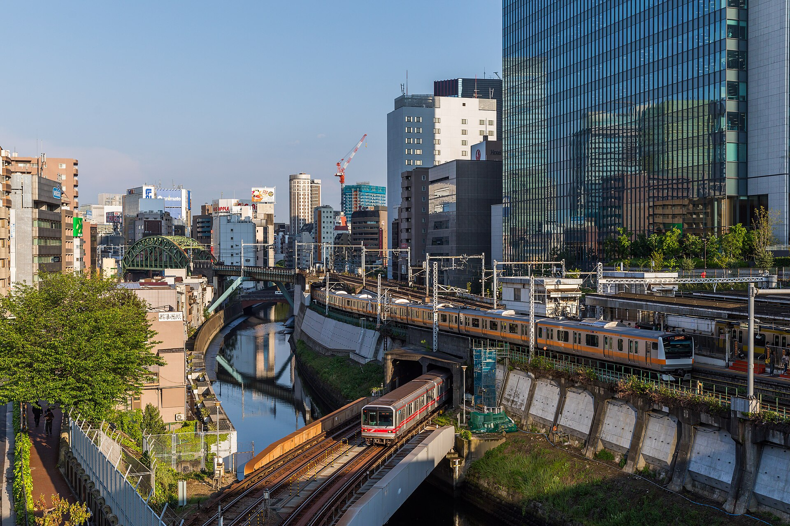
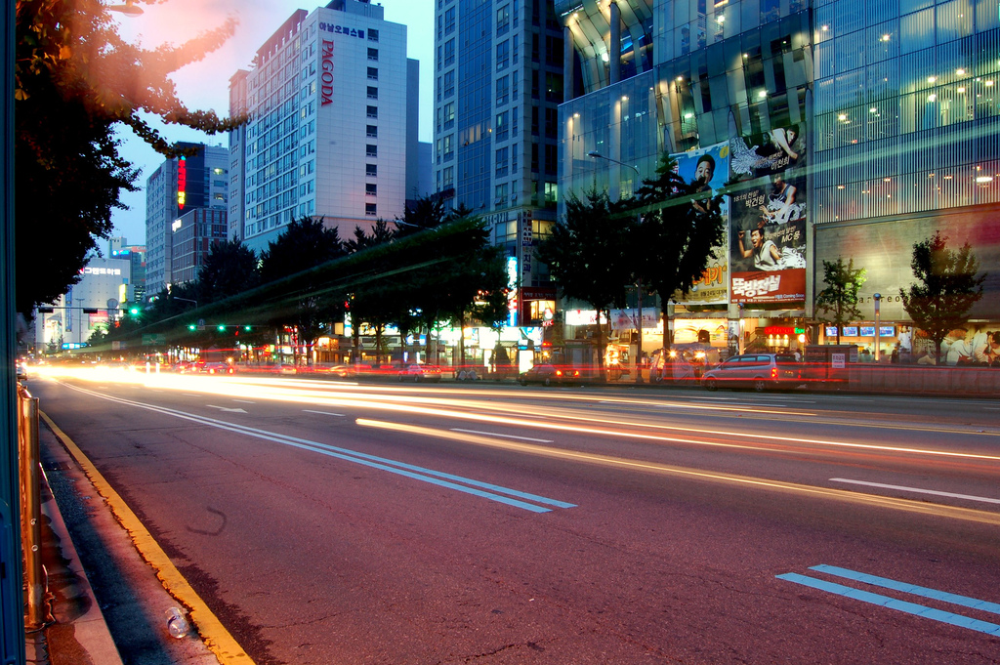

İngilizce okuyabilirsin.
Peki yaşayabilir misin?
Peki yaşayabilir misin?

Her iki şehirde de İngilizce lisans seçenekleri var. Ama her program İngilizce değil.
JAPONYA
Japonca, günlük yaşamını kolaylaştırır.
GÜNEY KORE
Korece, kampüs dışında önemli bir avantaj sağlar.
Başvurmadan önce bölümün öğretim dilini ve dil yeterlilik şartlarını kontrol et.